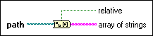

Path to Array of Strings Function
Owning Palette: Path/Array/String Conversion Functions
Requires: Base Development System
Converts a path into an array of strings and indicates whether the path is relative.

 Add to the block diagram Add to the block diagram |
 Find on the palette Find on the palette |